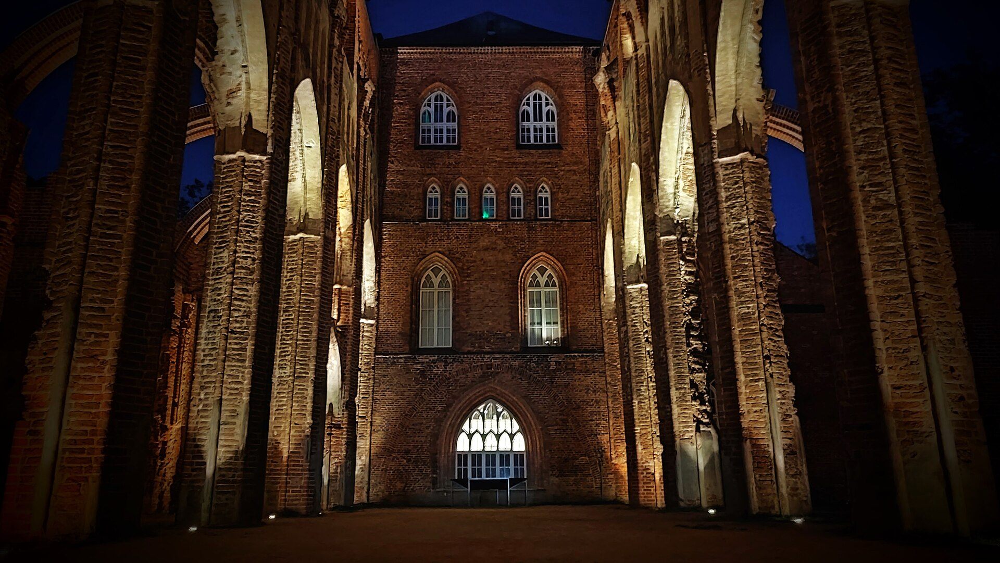
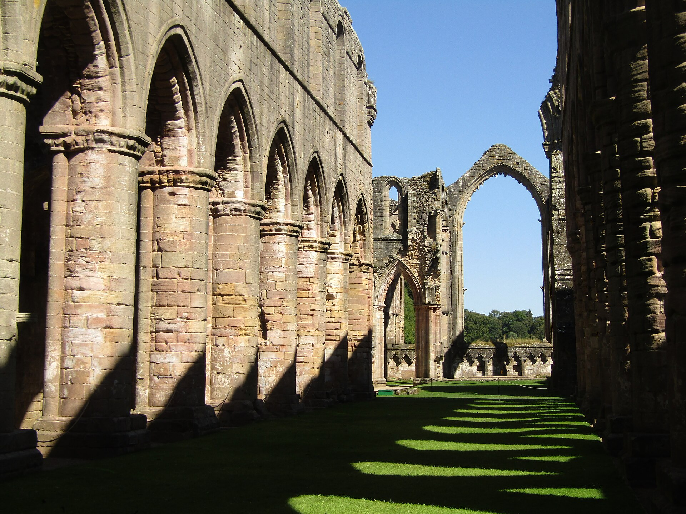
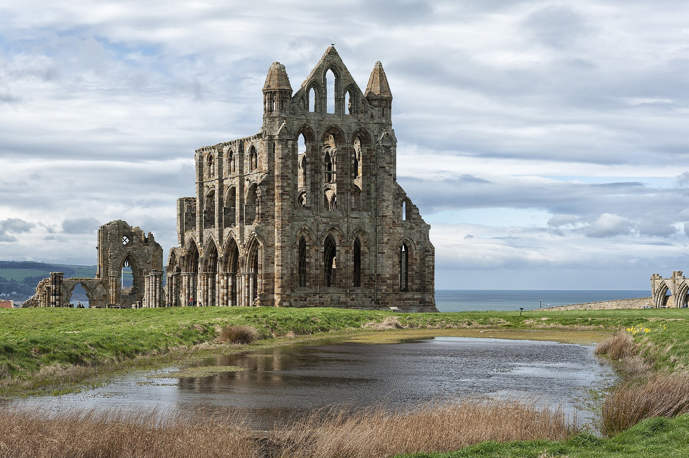

Path of Exile 2The 1.0 full release, counted down for Hamza
Early access ends on Friday 11 December 2026, 1:00 PM PST. The game goes free on PC, PlayStation 5 and Xbox Series X|S, with two new classes and the last two acts of the campaign.
Friday 11 December, 1:00 PM PST (9:00 PM UTC).

Four things land on launch day
Grinding Gear Games revealed the 1.0 content at ExileCon. Here's what Hamza gets to play first.
The Duelist
A sword class built on Stances. Ready Stance upgrades into Sand or Blood Stance. Ascendancies: Knight and Master-at-Arms.
The Shadow
Daggers, traps and a Shade clone. Stealth keeps monsters blind until you're close. Ascendancies: Assassin and Infiltrator.
Acts 5 and 6
The campaign is finished: 24 new areas and 18 new unique bosses, starting in the chained harbour of Oriath.
Conquerors of Wraeclast
The launch league. Raise troops, take enemy castles and build a stronghold for one of three factions.

Wraeclast, bigger than early access
The full release adds more than classes. These are the numbers GGG has shared so far.
Hamza, clear Friday evening
Clear Friday evening. The servers open at 1:00 PM PST on 11 December, and the first league start only happens once.